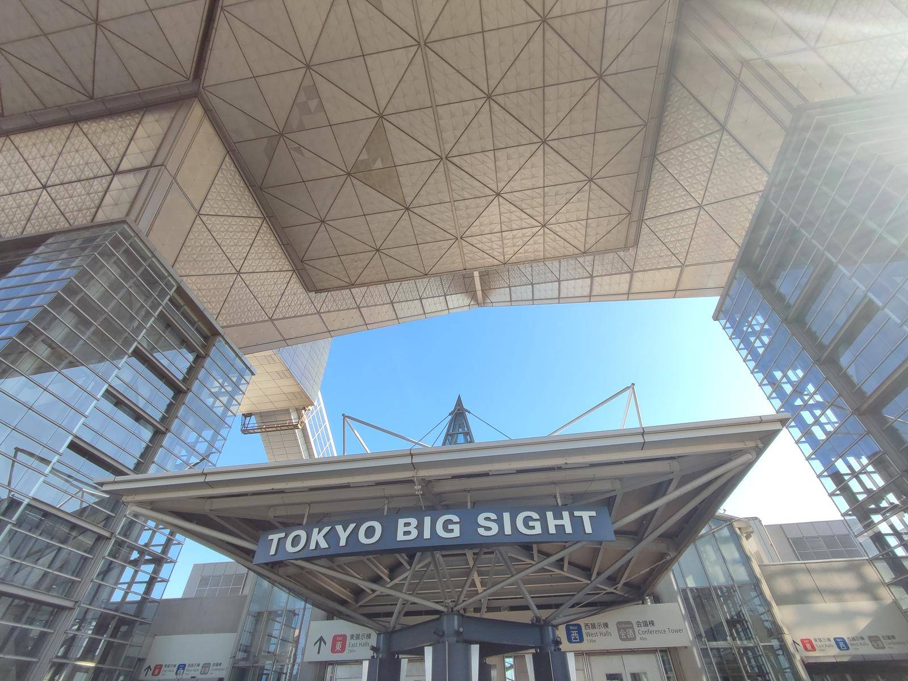
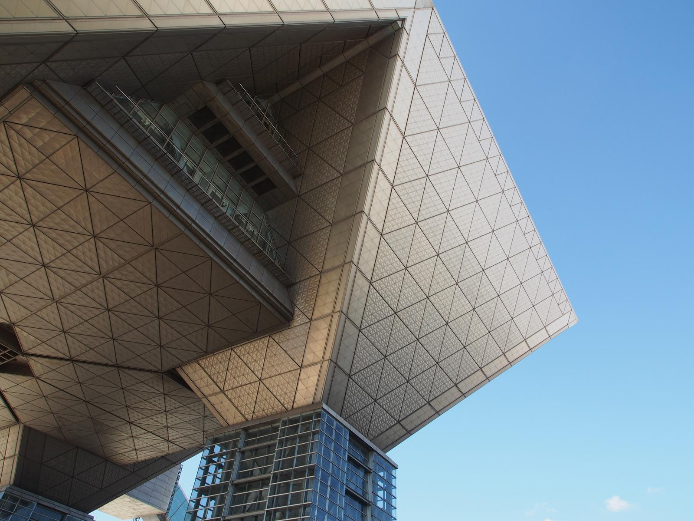

Venue · Convention centre
Tokyo Big Sight (Tokyo International Exhibition Center)
- Type
- Convention centre
- Location
- Tokyo, Japan
- Address
- 3-11-1 Ariake, Koto-ku, Tokyo, Japan
- Capacity
- 1,000 capacity
- Exhibition space
- 115,420 m²
- Halls
- Official annual report and facility guide: indoor exhibition area 115,420 m² across 16 halls in three buildings, plus a 6,000 m² rooftop exhibition area not included in exhibition_sqm. Official East Hall 7 is the largest hall at 11,680 m². International Conference Hall 1,000 seats; Reception Hall 1,700 m²; 22 meeting rooms from 35 m² to 760 m² (a Japanese facilities page also mentions 24 conference rooms).
- Official website
- https://www.bigsight.jp/english/
About
Tokyo International Exhibition Center in Ariake, operated by Tokyo Big Sight Inc. Official indoor exhibition area is 115,420 m² (16 halls in three buildings). The official 6,000 m² rooftop exhibition area is recorded as a space but is not included in exhibition_sqm. Official facility guide hall areas: East Halls 1–6 8,670 / 8,350 / 8,670 / 8,670 / 8,350 / 8,670 m², East 7 11,680 m², East 8 3,080 m², Link Space 1,120 m²; West Halls 1–2 8,880 m² each, West 3 4,680 m², West 4 6,840 m², West atrium 2,000 m²; South Halls 1–4 5,000 m² each. capacity_max_delegates is the official International Conference Hall seating figure of 1,000; official people capacities for the exhibition halls themselves were not published in the pages and PDFs used here, so the conference-hall figure is a conservative headline rather than a campus-wide attendance maximum. Atlas strings that name West Hall, East Halls or West Halls 1–3 are the same campus and are linked here. Coordinates are the atlas precise pin. Japan has no official government hotel star classification used in this dataset; this is not a hotel, so star_rating is null.
Spaces
| Name | Type | Capacity | Area |
|---|---|---|---|
| East Hall 1 | — | — | 8,670 m² |
| East Hall 2 | — | — | 8,350 m² |
| East Hall 3 | — | — | 8,670 m² |
| East Hall 4 | — | — | 8,670 m² |
| East Hall 5 | — | — | 8,350 m² |
| East Hall 6 | — | — | 8,670 m² |
| East Hall 7 | — | — | 11,680 m² |
| East Hall 8 | — | — | 3,080 m² |
| West Hall 1 | — | — | 8,880 m² |
| West Hall 2 | — | — | 8,880 m² |
| West Hall 3 | — | — | 4,680 m² |
| West Hall 4 | — | — | 6,840 m² |
| South Hall 1 | — | — | 5,000 m² |
| South Hall 2 | — | — | 5,000 m² |
| South Hall 3 | — | — | 5,000 m² |
| South Hall 4 | — | — | 5,000 m² |
| Rooftop exhibition area | — | — | 6,000 m² |
| International Conference Hall | — | 1,000 | — |
| Reception Hall | — | — | 1,700 m² |
Official documents
- Tokyo Big Sight facility information guide Fact sheet
- Tokyo Big Sight Annual Report 2024 (English) Document
Upcoming events
- AUTOMOTIVE WORLD Tokyo 2027Tokyo, JapanExpos
- JAPAN SHOP 2027Tokyo, JapanExpos
- FOODEX JAPAN 2027Tokyo, JapanExpos
- HCJ 2027 (HOTERES / CATEREX / Japan Food Service Equipment Show)Tokyo, JapanExpos
- SusHi Tech Tokyo 2027Tokyo, JapanTech
- Japan IT Week Spring 2027Tokyo, JapanTech
- SEMICON Japan 2026Tokyo, JapanTech
- WebX 2027Tokyo, JapanCrypto / Web3
- NexTech Week Tokyo 2027 Spring (AI EXPO TOKYO)Tokyo, JapanAI
- EDIX Tokyo 2027 (Education & IT Expo)Tokyo, JapanEducation
- Content Tokyo 2027Tokyo, JapanTech
- Google Cloud Next Tokyo 27Tokyo, JapanAI
Sources
- Official source — https://www.bigsight.jp/english/
- Official source — https://www.bigsight.jp/english/organizer/download/pdf/facility_information.pdf
- Official source — https://www.bigsight.jp/english/visitor/company/pdf/tokyobigsight_annualreport_2024_en.pdf